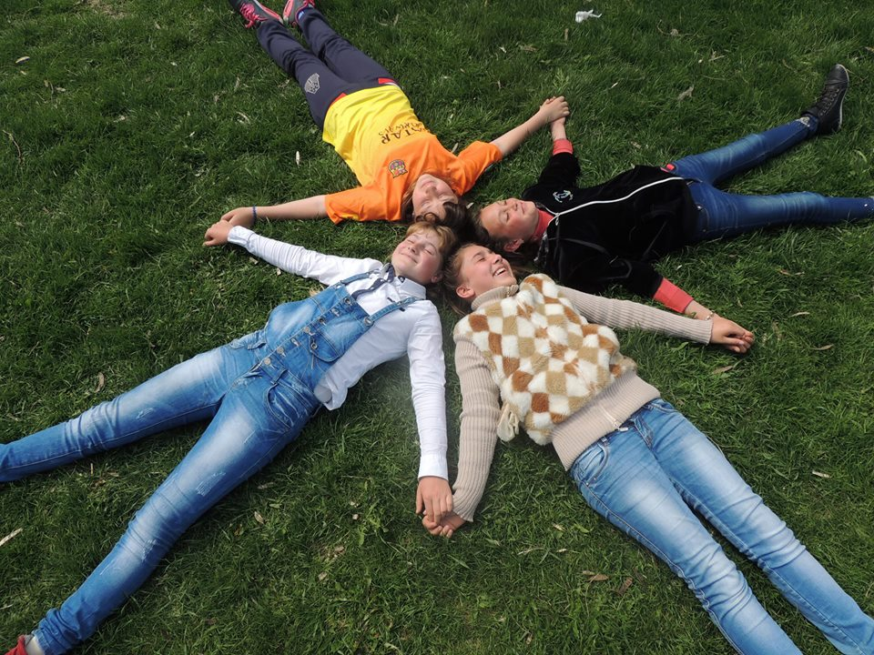

Copilaria mea:

- 16 iunie 2015 admin Catalina Budurin, children, copii, copilarie, Republica Moldova, Stefanesti
Copilăria – cea mai frumoasă perioadă a vieții, învăluită de un farmec deosebit și dulce precum mierea albinilor. Momente in care poți zîmbi din toată inima simțindu-te fericit(ă), fără griji și nevoi, să te joci ore în șir alături de prietenii în compania cărora totul în jur îți surâde și cu care mai faci cîte o năzbâtie pentru care părinții te mai dojenesc din când în când, însă e de ajuns doar o singură privire ce le înmoaie inima și tristeţea lor dispare, clipe unice în care viața îţi arată cele mai frumoase laturi ale sale, mergând alături sentimente extraordinare, cu o stare sentimentală şi de spirit absolut diferită şi deosebită – iată acestea sunt caracteristicile de bază ale copilăriei.

- Desigur ca iubeam atentia(mai mult ca acum).Doream sa ma aflu in centrul tuturor spectacolelor(ca in imaginea alaturata, unde jucam rolul principal al caprei intr-o sceneta pentru parinti, cu ocazia sarbatorii de Anul Nou). Pana acum tin minte acele momente cum le ziceam eu de glorie.
.